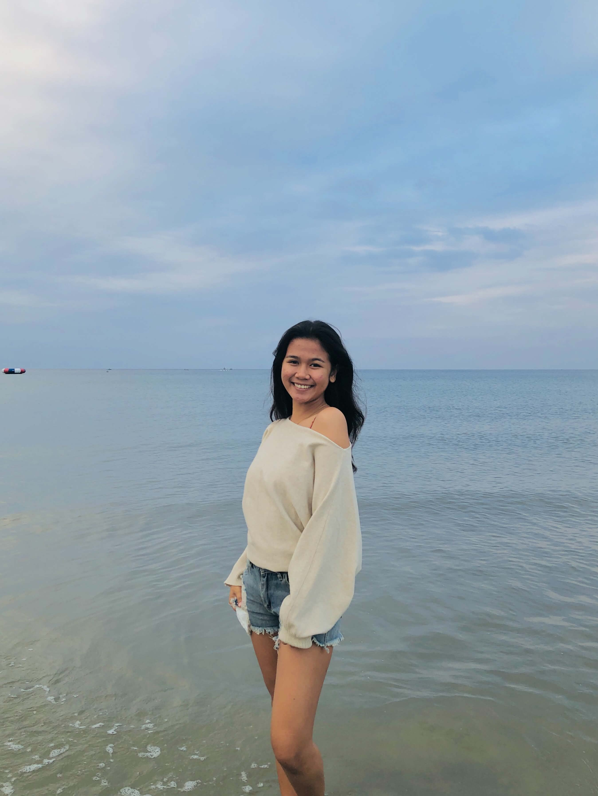

01 / getting to know me
A little about myself.
Every person has a story. Here's a little piece of mine.

simply me ♡
hello, it's nice to meet you!
I'm Alexandria, and this is my story.
You can call Alex or Xanie whatever you prefer to call me. I am 18 years old and my birthday is on January 24, 2008. I'm a first year college student at the Laguna State Poltytechnic Univerity - San Pablo Campus. I am a kind of student who enjoys learning, discovering new things, exploring different interests and I also enjoy having my ME time. I may be look intimadating or "mataray", but I know when you get to know me and hangout more you will see the real me behind the "mataray" look.
I believe that every experience teaches us something. This website is a small collection of the things that make me who I am.
still learning, still growing ♡02 / little details
A few things about me.
My Background
I am from Brgy. Pury, San Antonio, Queszon. "My hometown is a barangay where life is quiet and peaceful. What I love most about it is the wide rice fields right in front of our house. In the morning, you can watch the sunrise painting the sky, while a cool, gentle breeze wraps around you. Whenever I step outside to bask in that warm golden light, I’m always mesmerized by how calm and peaceful everything feels. My hometown is pure province vibes, through and through.
My Studies
I am currently taking up Bachelor of Science in Computer Science. To be honest, Computer science is not the course i dreamt of taking but it is in my choices of course. At first, I was doubting myself if I can handle this course because I admit that i Hate computers, However, as I learned more about it, I realized that computer science is interesting and I am starting to enjoy it. I'am looking forward to learning more about it and I hope that I can be a good programmer in the future.
My Interests
I enjoy music, discovering new cafes, and spending time on activities I love. I’ve always been someone who treasures stillness over noise. I love the comfort of my own space, where I can get lost in music that truly speaks to me, imagine places I long to visit, and simply breathe. I may not say much, but I feel deeply — and I find so much happiness in the quiet, meaningful things that make life beautifully calm.
Slow progress is better than no progress.
a reminder for every version of me